Morfologia |
|
|---|---|
| Altitudine: | circa 222 metri s.l.m. |
| Tipo di territorio: | principalmente pianeggiante, non particolarmente fertile |
| Fiume Adda: | il rapporto col fiume Adda è ststo da sempre molto importante, il comune di sviluppa sulla sponda sinistra del fiume |
| Le cave: | Sono molto importanti le cave di ghiaia, anche nel corso del passato |
La chiesa di San Vittore è la parrocchiale di Bottanuco, in provincia e diocesi di Bergamo; fa parte del vicariato di Calepio-Telgate. La chiesa conserva le tele di Federico Ferrario, di Francesco Capella e di Enea Salmeggia.
Piazza San Vittore, 16 — 24040 Bottanuco (BG)
La chiesa di San Vittore Martire a Bottanuco ha origini medievali: è documentata già nel XIII secolo come dipendente dalla pieve di Terno d’Isola. Nei secoli successivi venne più volte citata nei registri ecclesiastici e visitata da figure importanti come Carlo Borromeo nel 1575. L’edificio attuale fu costruito tra il 1669 e il 1702 in stile barocco e consacrato nel 1740. Nel tempo la chiesa si arricchì di altari, decorazioni e opere di pittori lombardi. Divenne il centro religioso stabile della comunità, mantenendo fino a oggi il ruolo di parrocchiale di Bottanuco.
La chiesa di San Vittore Martire a Bottanuco si presenta come un elegante edificio barocco, con una facciata armoniosa scandita da lesene e coronata da un grande timpano centrale. Nelle nicchie trovano posto le statue dei santi protettori, mentre al centro spicca la figura di San Vittore, che domina l’ingresso. L’interno è a navata unica, luminoso e ben proporzionato, arricchito da cappelle laterali e da decorazioni tipiche del Seicento e Settecento. Le tele e gli altari in marmo contribuiscono a creare un’atmosfera sobria ma solenne, rendendo la chiesa un punto di riferimento spirituale e architettonico per l’intero paese.
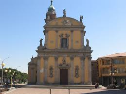
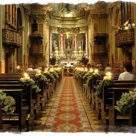
La chiesa della Visitazione di Maria Santissima è la parrocchiale di Cerro frazione di Bottanuco in provincia e diocesi di Bergamo; fa parte del vicariato di Capriate-Chignolo-Terno. La chiesa conserva opere cinquecentesche e seicentesche tra le quali il dipinto posto sull'altare maggiore di Pietro Ronzelli raffigurante la Visitazione di Maria.
Via Santa Maria n. 7, 24040 Bottanuco (BG), frazione Cerro.
La prima chiesa del Cerro risale al Quattrocento ed era un piccolo edificio costruito dagli abitanti della zona chiamata “Masatica”. Fu visitata da Carlo Borromeo nel 1575 e nel Seicento vennero aggiunti coro e campanile. Nell’Ottocento, a causa della crescita della popolazione, si decise di edificare una nuova chiesa più ampia: i lavori iniziarono nel 1880 su progetto di Antonio Piccinelli. La parrocchia divenne autonoma nel 1907 e l’attuale chiesa venne consacrata nel 1921. Al suo interno conserva opere provenienti dall’edificio antico, segno della continuità storica della comunità.
La chiesa della Visitazione di Maria Santissima a Bottanuco (frazione Cerro) è la parrocchiale del paese, ricostruita alla fine dell’Ottocento su progetto di Antonio Piccinelli. La facciata presenta un portico con quattro colonne e un timpano sormontato da statue. L’interno, a navata unica e con pianta a croce latina, custodisce opere provenienti dall’antica chiesa del XV secolo, tra cui la pala seicentesca della Visitazione di Pietro Ronzelli. È un edificio che unisce storia, devozione e arte della comunità locale.
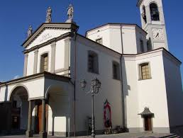
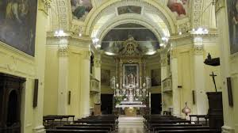
Il Palazzo Conti Morlacchi è una raffinata villa signorile settecentesca situata nel centro storico di Bottanuco. Un tempo residenza nobiliare, sorge sul luogo dell’antico castello medievale e conserva ancora oggi eleganti elementi architettonici d’epoca, cortili interni e atmosfere che raccontano la vita delle famiglie che lo abitarono. Oggi il palazzo, restaurato, rimane una delle testimonianze storiche più importanti del paese.
Via Trieste 9/13, 24040 Bottanuco (BG)
Il Palazzo Conti Morlacchi nasce tra la fine del Settecento e l’inizio dell’Ottocento come elegante villa signorile dei conti Gritti-Morlacchi, famiglia agiata di notai e commercianti di seta. Sorge sulle antiche strutture del vecchio castello locale, un tempo legato alla presenza del condottiero Bartolomeo Colleoni. Nel corso dell’Ottocento e del Novecento l’edificio cambia più volte destinazione d’uso: durante la Prima guerra mondiale viene utilizzato come caserma e, successivamente, ospita anche una filanda. In tempi recenti il palazzo è stato restaurato, mantenendo la struttura originaria e parte degli elementi architettonici storici, diventando oggi una dimora restaurata con funzioni ricettive e culturali.
Il Palazzo Conti Morlacchi è un’elegante villa signorile di origine settecentesca, situata nel centro storico di Bottanuco. La struttura presenta la forma tipica delle dimore nobili lombarde, con un porticato ad archi al piano terra, cortile interno e facciata sobria ma armoniosa. L’edificio conserva ancora oggi caratteri architettonici originali, come le colonne in pietra arenaria e gli ambienti interni voltati, che testimoniano il suo passato nobiliare e l’importanza della famiglia che lo abitò. Oggi la villa è restaurata e valorizzata, mantenendo intatto il suo fascino storico.
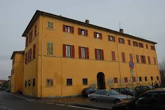
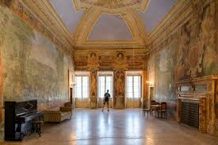
La Cappella dei Morti della Peste è un piccolo edificio sacro, situato nella località Brembusate nel comune di Bottanuco, in provincia di Bergamo. Venne eretta come memoriale per le vittime della peste che colpì la zona nel XVII secolo, ed originariamente era una semplice edicola commemorativa. Nel corso del tempo la struttura fu ampliata — attorno al 1930 — fino a raggiungere l’aspetto attuale; inoltre negli anni ’60 fu sottoposta a un restauro generale. Oggi la cappella — semplice ma suggestiva — rappresenta un luogo di memoria e raccoglimento, testimonianza della storia e della sofferenza delle comunità locali.
È nella frazione Brembusate, comune di Bottanuco, in provincia di Bergamo.
La Cappella dei Morti della Peste di Brembusate fu costruita come piccolo luogo di memoria dopo la terribile epidemia del XVII secolo che colpì la zona di Bottanuco. In origine era una semplice edicola dedicata alle vittime, poi ampliata negli anni Trenta del Novecento fino ad assumere l’aspetto attuale. Restaurata negli anni Sessanta, oggi rimane un luogo di raccoglimento che testimonia la devozione popolare e il ricordo della tragedia che segnò profondamente la comunità locale.
La Cappella dei Morti della Peste è un piccolo edificio sacro situato nella frazione Brembusate di Bottanuco. Nacque come semplice edicola votiva, costruita per ricordare le vittime della peste che colpì il territorio nel Seicento. Nei decenni successivi fu ampliata e, attorno agli anni Trenta del Novecento, assunse l’aspetto attuale, con una struttura modesta ma curata. Restaurata negli anni Sessanta, la cappella conserva ancora oggi un’atmosfera raccolta e silenziosa, diventando un luogo di memoria e devozione per la comunità.
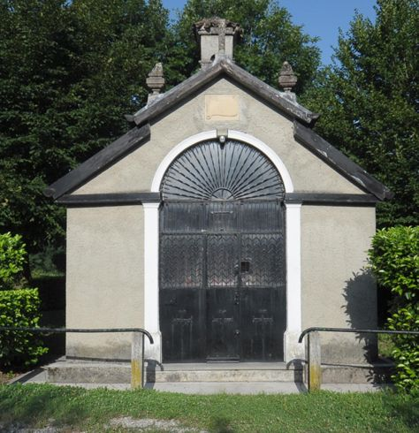
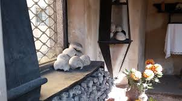
Come suggerisce il suo nome, questo percorso ha il suo punto di partenza in corrispondenza del traghetto leonardesco di Villa d'Adda, unico rimasto dei cinque presenti fino al XIX secolo. Il sentiero prosegue verso sud costeggiando il fiume, attraversando il territorio dei Comuni di Calusco d’Adda, Medolago, Suisio, Bottanuco e Capriate San Gervasio, per raggiungere il villaggio industriale di Crespi d’Adda, sito UNESCO dal 1995 e da lì, poco oltre, il punto di affluenza del fiume Brembo nell’Adda. Nel tratto bottanuchese, il sentiero attraversa diversi punti importanti per la storia locale e molto interessanti sul piano naturalistico e della biodiversità.
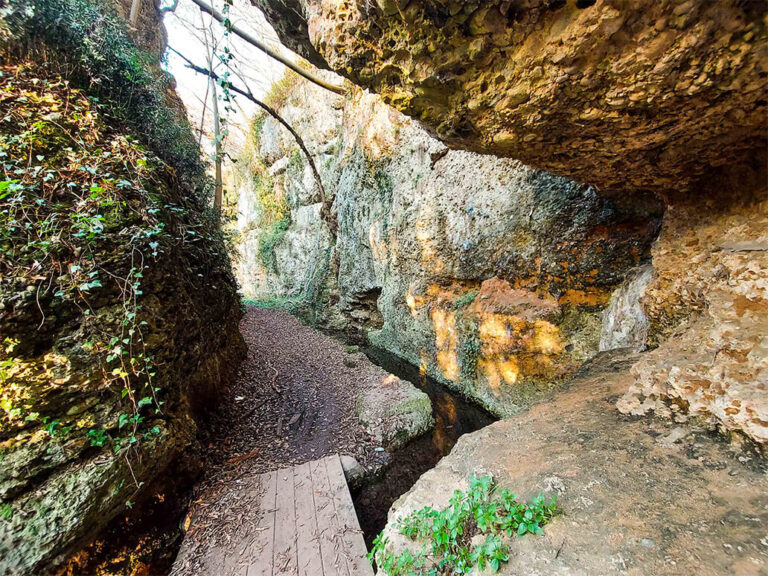
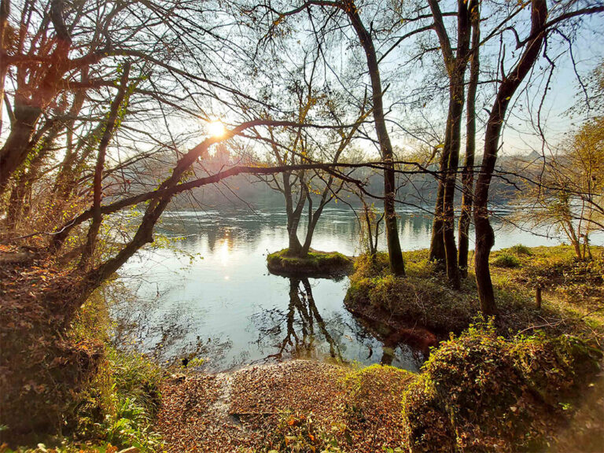
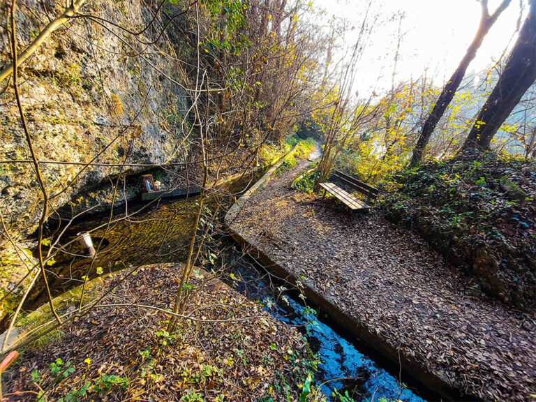
Per la sua conformazione orografica, con l’avvallamento naturale verso il fiume, sono diversi i collegamenti che dai nuclei urbani storici di Bottanuco e Cerro scendono verso il fiume; scalette e viuzze che per secoli sono state percorse dalle donne e dagli uomini del paese e che ancora oggi, in qualunque stagione dell’anno, rappresentano le “porte di accesso” ai boschi dell’Adda.
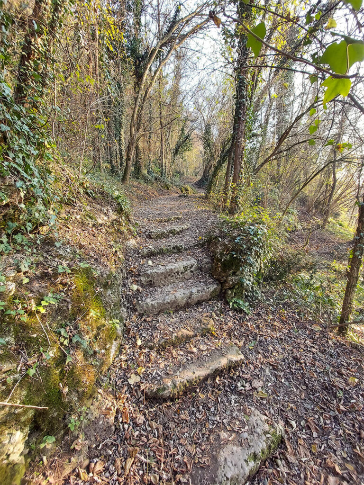
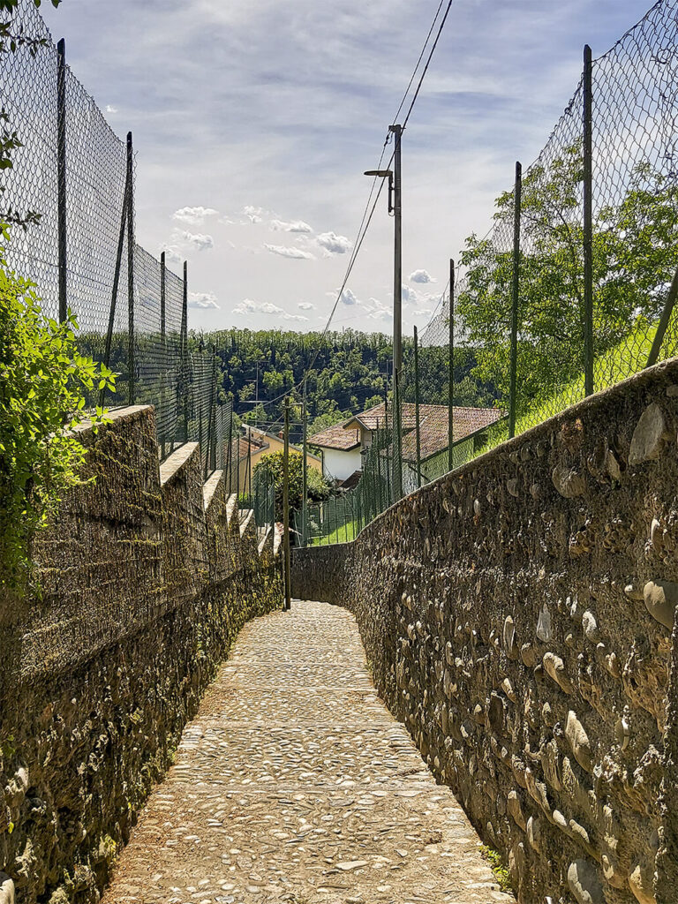
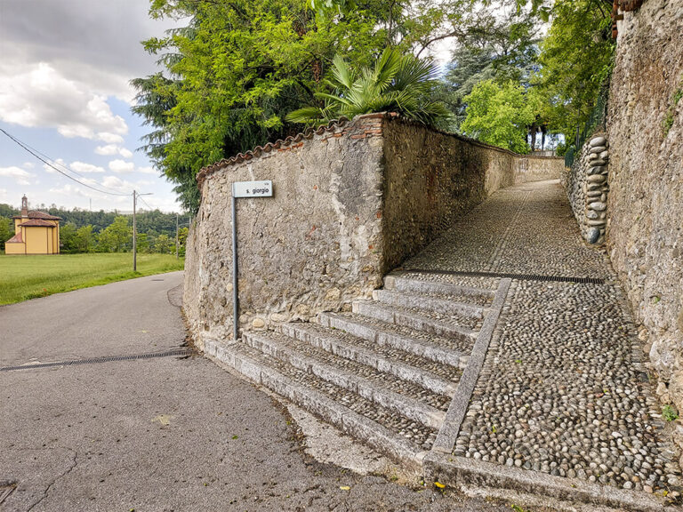
Sono diverse le percorrenze che offre il territorio posto sul terrazzamento fluviale: prati, campi coltivati, l’ambito della ex cava di sabbia e ghiaia, i boschi... Camminare, correre o pedalare in queste vie e sentieri, da soli o in compagnia, può essere un’esperienza indimenticabile.
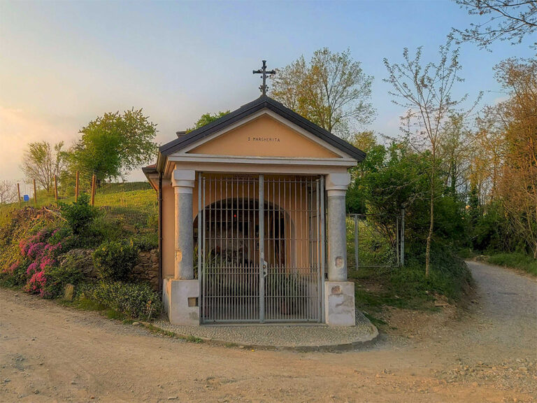
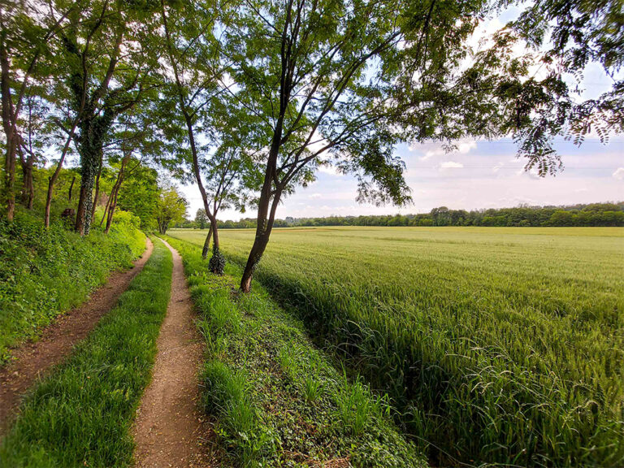
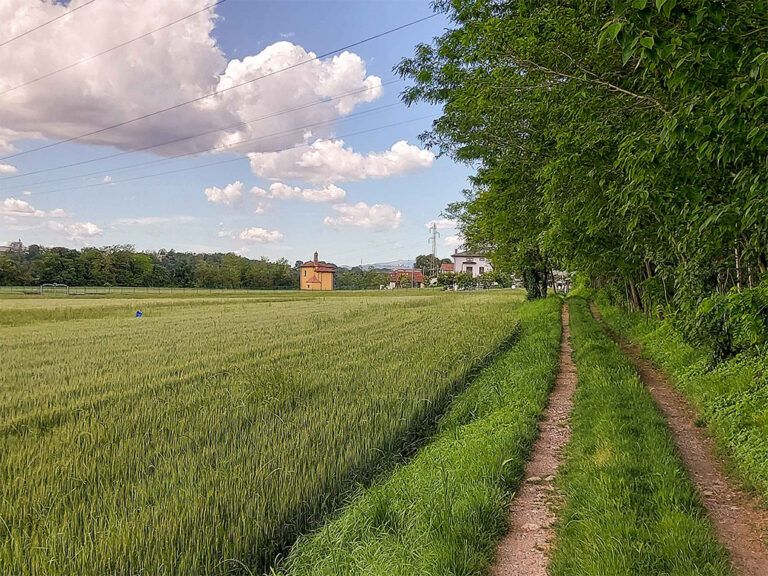
Questo percorso collega idealmente i punti di maggiore interesse storico-artistico del paese: le chiese parrocchiali di San Vittore Martire in Bottanuco e della chiesa parrocchiale della Visitazione di Maria Santissima in Cerro; la chiesetta campestre di San Giorgio; la chiesetta di Benbrüsat; le edicole votive (o cappellette) realizzate tra il Medioevo e il Novecento (Madonna Immacolata, Madonna di Lourdes, Madonna del Buon Consiglio, Madonna dell’Addolorata, Santa Margherita, Sacra Famiglia, San Michele, Madonna del Santo Rosario); le dimore storiche, edificate tra il XVI e il XVIII secolo (Villa Gumier, Villa Ferri, Palazzo Crotta, Palazzo Morlacchi).
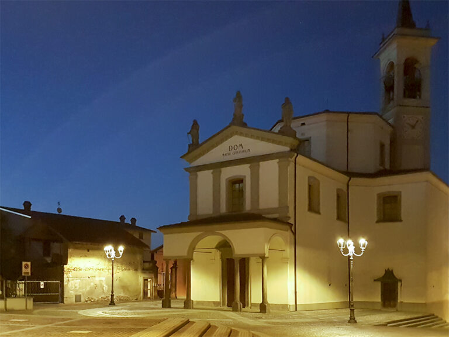
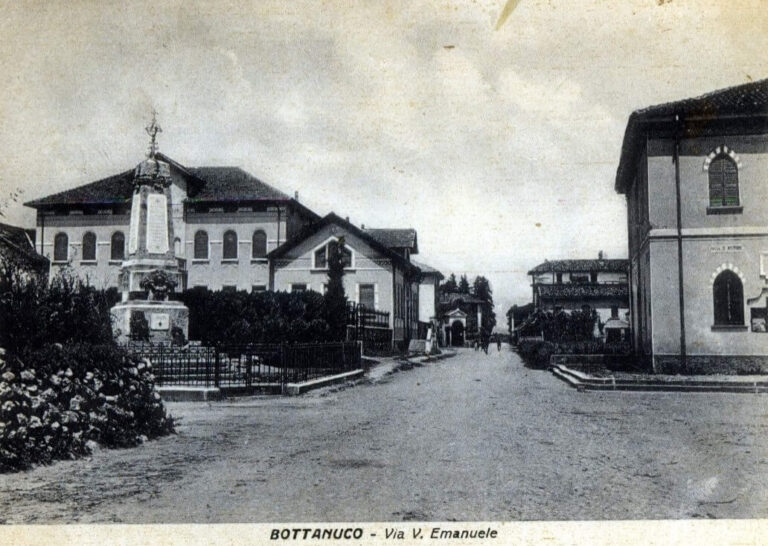
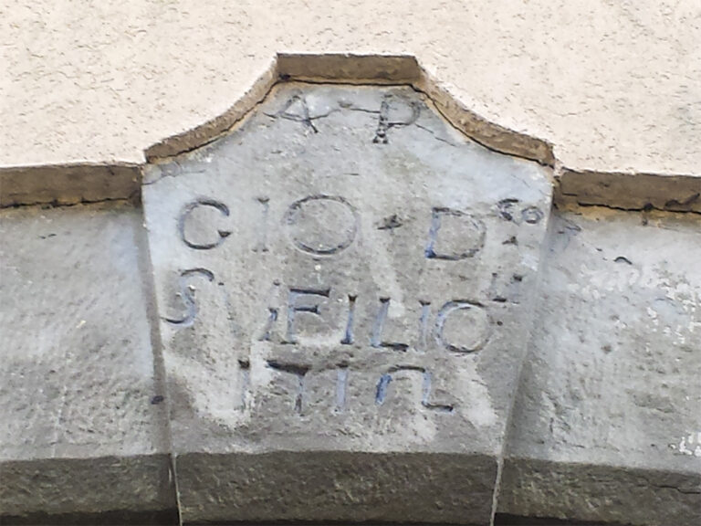
Questo percorso collega idealmente i punti di maggiore interesse storico emozionali del paese, facendo rivivere la vita del tempo attraverso suoni e audio dell'epoca, con ben 27 tappe audio molto particolari e interessanti
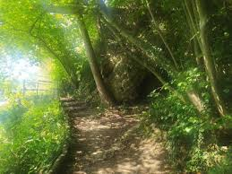
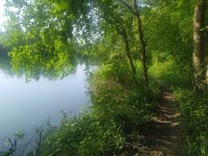
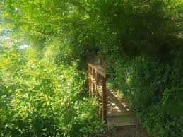
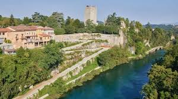

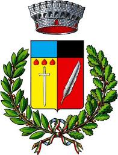
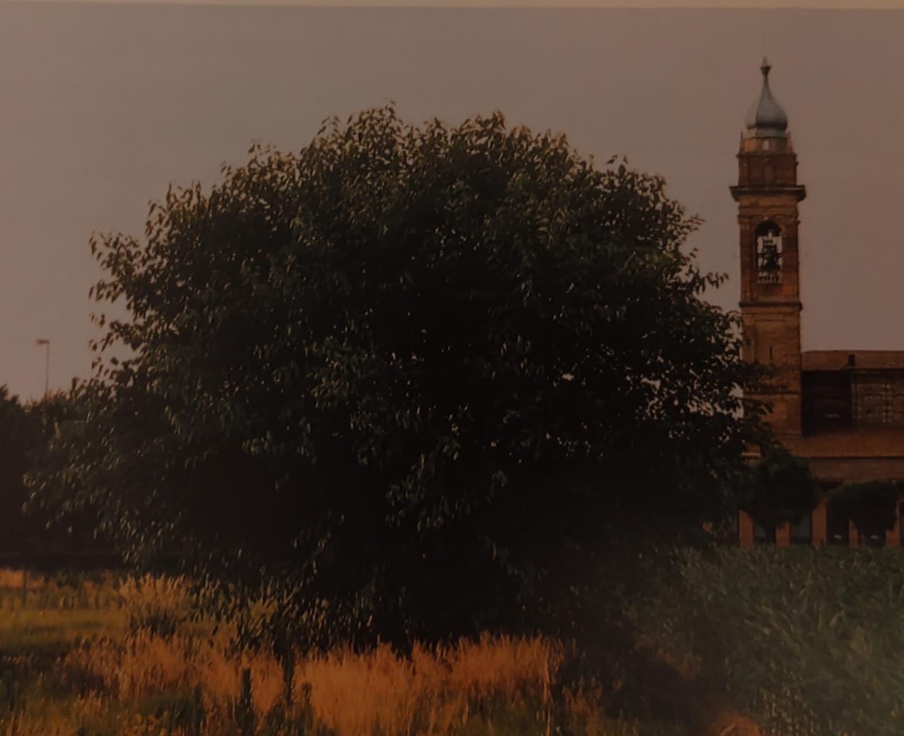
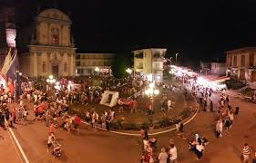
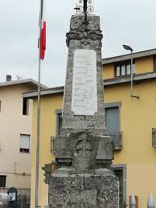
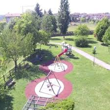
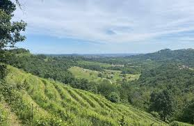
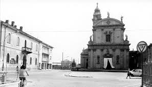
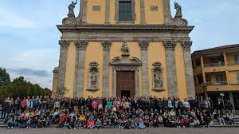
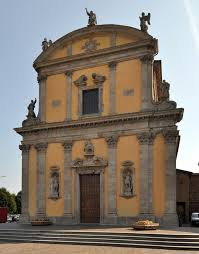